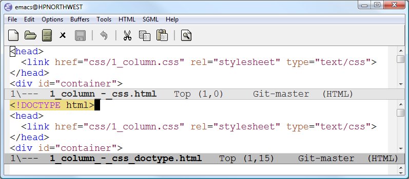

CSS layouts
Here are fixed width, centered, Cascading Style Sheet (CSS) layout examples originally from Max Design.[1]
Max_Design_CSS_layout_examples_-_2014_07_06.zip md5sum c21de7f89f29e97aa5cf7ddeb47f30e6
CSS combined with a document type (doctype) makes for a consistent enough display in a browser. Use these examples to create CSS layouts for your own browser pages. As Max Design states, "Here are a range of free CSS page layouts,", "...free to use and abuse as needed."
Advantages of fixed width centered layouts
Fixed width, centered layouts offer several advantages. A fixed width centered display makes the presentation reasonably consistent from one computer monitor resolution to another. The fixed width makes the presentation somewhat more paper like in that the text does not move from one line to another as the browser window is resized. The centered display keeps the page in front of the viewer rather than off to the left no matter the display width.
{kind=link}
Above the centered fixed width display is consistent no matter the computer's display width.
Details matter. Both CSS and doctype are needed in the .html file.
Both the CSS layout file and the doctype need to be specified in the page file to ensure browsers center the page.
{kind=link}
Above with css and no doctype in the .html Internet Explorer and Chrome displays are inconsistent which is not desired. One is left and one is centered.
{kind=link}
Above with both css and doctype in the .html both Internet Explorer and Chrome center the page as desired.
- The only difference between the two files
- 1_column_-_css.html
- and
- 1_column_-_css_doctype.html,
- is the additional
- <!DOCTYPE html>
- line at the beginning of the second file.

The differences between the two files is shown in Emacs above.
Use a text editor like Emacs or Notepad or look at source in Amaya or another web editor. Change the example .css and .html files. View the .html files in Internet Explorer, Chrome or other browsers. You will understand better how these centered, fixed width pages work.
References
- ^ http://www.maxdesign.com.au/articles/css-layouts/ Retrieved 2014 07 06